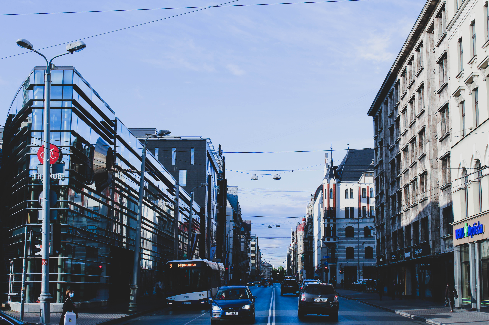

Brīvības iela
Nedaudz novirzoties no mana iepriekš izklāstītā maršruta, savā stāstā nevarēju nepieminēt Brīvības ielu – Rīgas galveno ielu, kas sākas “Mildas” jeb Brīvības pieminekļa pakāpē un stiepjas līdz pat Rīgas pilsētas robežai. Man vienmēr ir licies fascinējoši, ka tā ir sadalīta trijās daļās – Brīvības bulvāris, Brīvības iela un Brīvības gatve. Ja savā ikdienas ceļā uz Latvijas Universitāti izvēlos braukt nevis ar 23., bet gan 17. trolejbusu, lielākā daļa maršruta tiek pavadīta uz tās.
Tāpat šī iela man ir svarīga, jo kādreiz Brīvības ielas 40. numurā pavadīju savu ikdienu – strādājot sabiedrisko attiecību uzņēmumā. Tajos laikos bieži sanāca skraidīt starp Brīvības ielu un Raiņa bulvāri, savienojot darbu ar studijām universitātē. Arī šobrīd manas darba gaitas vēl joprojām ir saistītas ar “Brīvībeni” – strādāju uzņēmumā, kura birojs atrodas Brīvības gatvē.